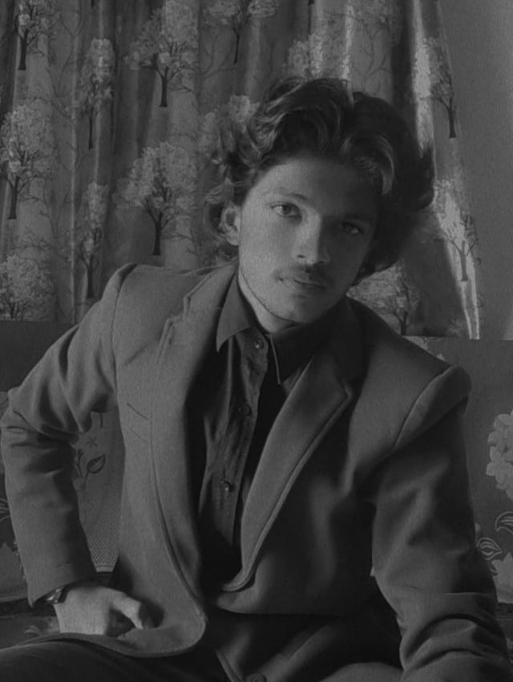
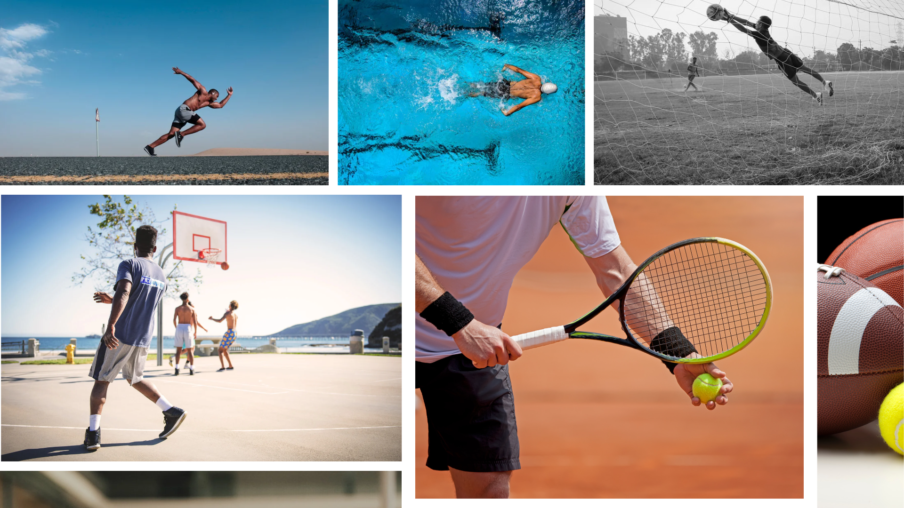
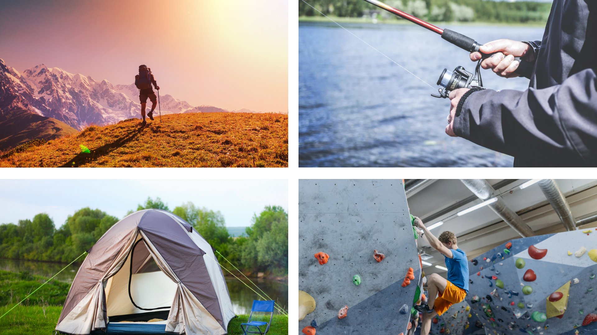
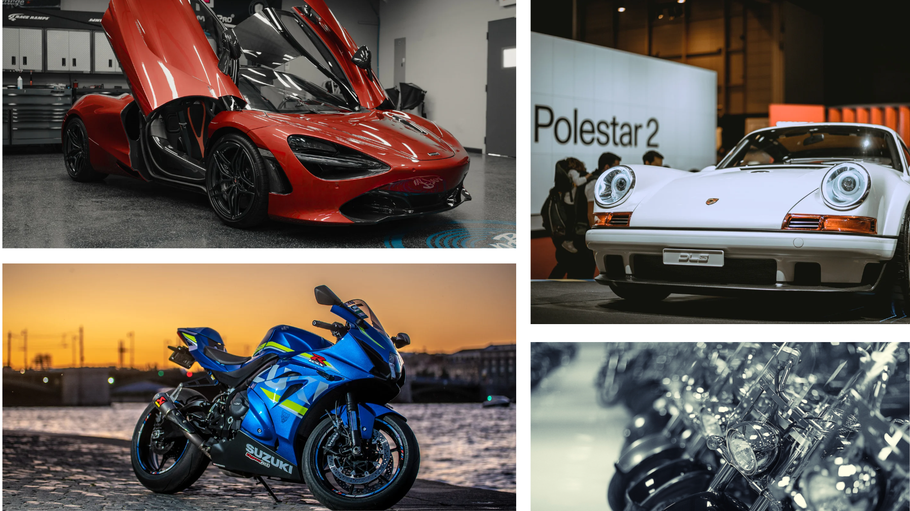
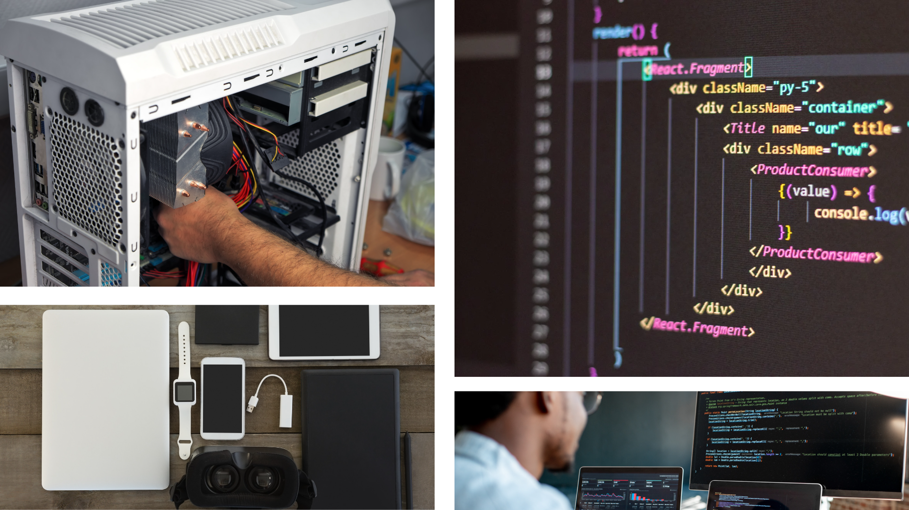

|  |
Hey friends —Hello there! I'm delighted to have you With a background that blends creativity and Sports have been a source of inspiration and |
|
I enjoy playing sports like Tennis, Cricket, Kabaddi, Badminton and Weight lifting. I love playing them whether they are A team game or A solo player games like chess etc.. |
 |
|  |
I like to go on Hiking, Fishing, Camping and rock climbing (not in the mountains but in the arena). |
|
I like to attend bike shows and car expoes. |
 |
|  |
Building computers, coding like building this website, programming, or exploring new gadgets and electronics. |
Playing musical instruments like guitar, drums, piano, or bass, and exploring various genres.Exploring culinary skills, trying out different recipes, and mastering the art of grilling. Capturing moments, nature, landscapes, or exploring portrait photography are my other interests.